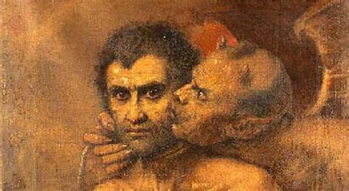
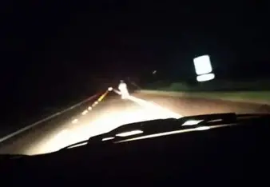
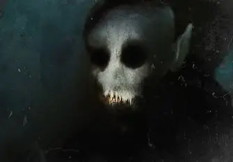

Nós somos uma empresa responsável pela contratação de serviços que envolvam o meio sobrenatural, contando
com a presença de Dean Winchester, Sam Winchester e Bobby Singer, os caçadores de demônios mais renomados e
conhecidos
Os Irmãos Winchester são pessoas "Sobrenaturais". Eles são caçadores de criaturas sobrenaturais, como
demônios,
fantasmas e monstros, e viajam pelos Estados Unidos em um icônico Impala preto. Eles exploram temas de
família, sacrifício e o bem contra o mal.
Dean Winchester é o irmão mais velho, conhecido por sua bravura e lealdade. Sam Winchester é o irmão mais
novo, inteligente e sensível, com habilidades psíquicas. Juntos, eles podem ajudar à enfrentar desafios
sobrenaturais por mais que tenham seus próprios problemas.
Bobby Singer é uma figura paterna para os irmãos, é um caçador experiente e cheio de sabedoria.
Existem outras pessoas que também trabalham com eles, como por exemplo Castiel, um anjo que se alia aos
irmãos, mas o foco é nos irmãos e em Bobby devido à experiência...
Tem interesse em contratar algum deles? Continue Rolando...
"O Motorista escolhe a música. O carona cala a boca" - Dean
"Você nunca desiste da família. Nunca" - Dean
"Eu não sou um monstro. Eu sou um caçador" - Sam
"A vida é curta, mas a morte é eterna" - Bobby
"A família é tudo. Sempre foi, sempre será" - Bobby
"A vida é feita de escolhas. Escolha sabiamente" - Sam
"A esperança é a última que morre" - Dean
"Às vezes você tem que fazer o que é melhor pra você, mesmo que isso magoe aqueles que você ame" - Sam
"A vida é uma luta constante, mas juntos somos mais fortes" - Bobby
"Demônios, eu entendo. Pessoas são loucas" - Dean
Faremos a seguir um questionário com você para entendermos de seus gostos e problemas
Avaliações
Veja o que nossos clientes dizem sobre nós:
"Os Irmãos Winchester são incríveis! Dean enfrentou o fantasma, e Sam finalizou meu problema.
Tudo em uma noite! 10/10!!!" - Cauã, Maranhão
"A equipe é muito profissional e dedicada. Recomendo! Uma pena é que ficaram muito pouco, nem vi
eles sem camisa... 9/10" - Letícia, Uberlândia
"Bobby é um sábio caçador. Ele me ajudou a entender melhor o sobrenatural, entretanto os irmãos
não estavam presentes. 8/10" - Cliente não-identificado
"Contratei os Irmãos Winchester para um caso complicado, queria exorcizar minha sogra, e eles me
irritaram muito. Eles são rápidos e eficientes, mas não dá, in-su-por-tá-veis, vieram com uns
papo de que ela tava normal sem demônio, é porquê não são eles que convivem né! 4/10" -
Anônimo
Casos Resolvidos
Poltergeist de Uberaba
Caos causado em uma fazenda afastada.
Moradores ouviram barulhos, portas batendo e objetos voando. Chamaram Dean e Sam, que descobriram que o poço no quintal era o local da manifestação. Um ritual com sal, fogo e água benta selou o espírito para sempre

Demônio de São Paulo
Um demônio que estava causando problemas em uma casa.
Uma família estava sendo atormentada por um demônio que se alimentava do medo. Dean e Sam realizaram um exorcismo, mas o demônio era mais forte do que o esperado. Com a ajuda de Bobby, eles conseguiram derrotá-lo e libertar a família.

Inferno na rodovia 262
Acontecimentos na rodovia que liga Minas Gerais ao Espírito Santo.
Carros estavam constantemente estragando na rodovia 262 sem explicações, causando acidentes. Dean e Sam descobriram que havia um fantasma de um motorista que morreu em um acidente há anos. Eles realizaram um ritual para libertar o espírito e restaurar a paz na rodovia, mas que, infelizmente, não durou muito tempo...
Lobisomem de Goiás
Um lobisomem que estava atacando pessoas em uma cidade pequena.
Um lobisomem estava atacando pessoas em uma cidade pequena. Dean e Sam descobriram que o lobisomem era na verdade um homem amaldiçoado por um antigo feitiço. Eles conseguiram reverter a maldição e salvar o homem, mas não sem antes enfrentar uma luta intensa.

Vampiro de Curitiba
Um vampiro que estava atacando pessoas em Curitiba.
Um vampiro estava atacando pessoas em Curitiba, se alimentando do sangue dos moradores. Dean e Sam descobriram que o vampiro era na verdade um antigo nobre que havia sido transformado em vampiro há séculos. Eles conseguiram derrotá-lo e libertar a cidade do terror.
Zumbis de Brasília
Uma infestação de zumbis em Brasília.
Uma infestação de zumbis estava causando pânico em Brasília. Dean e Sam descobriram que os zumbis eram na verdade pessoas infectadas por um vírus criado por um cientista louco. Eles conseguiram encontrar a cura e salvar a cidade, mas não sem antes enfrentar uma horda de zumbis famintos.
Caça às Bruxas de Salvador
Uma caça às bruxas que estava acontecendo em Salvador.
Uma caça às bruxas estava acontecendo em Salvador, com pessoas sendo acusadas injustamente de bruxaria. Dean e Sam descobriram que a caça às bruxas era na verdade uma conspiração de um grupo de pessoas que queriam se livrar de seus inimigos. Eles conseguiram expor a verdade e salvar as pessoas inocentes, entretanto muitas pessoas normais morreram.
.jpg)
.jpg)

.jpg)